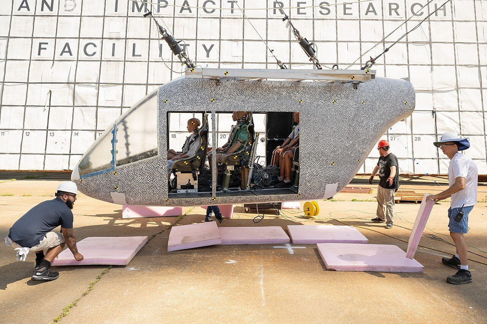
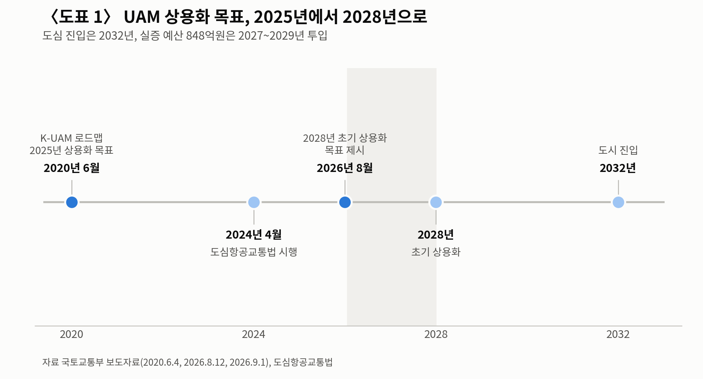
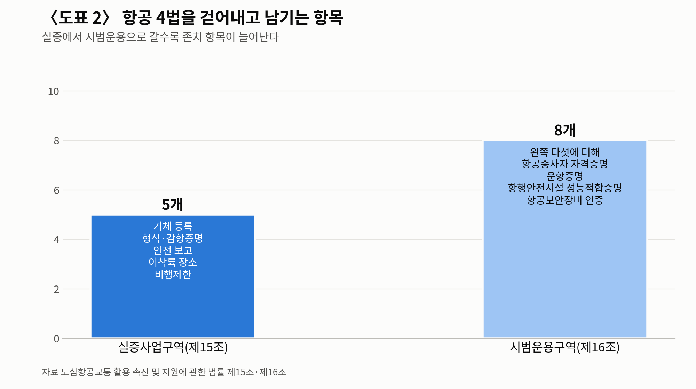

[UAM] 상용화 목표는 2025년이었다, 지금은 2028년
도심항공교통법 시행 2년, 시범운용구역은 아직 없다
실증구역에선 항공 4법이 멈추고 다섯 가지만 남는다
기체 분류에 파워드리프트가 없다, 특수한 분류로 우회 중
경세제민 AI·경제 연구소 김갑봉 박사│2020년 6월 국토교통부가 내놓은 보도자료 제목은 「2025년, 교통체증 없는 '도심 하늘길' 열린다」였다. 2026년 9월 현재 정부가 말하는 초기 상용화 시점은 2028년이다. 도심 진입 시점은 2032년으로 다시 밀렸다.

1. 목표는 2025년, 지금은 2028년
한국교통연구원 김영현 항공모빌리티정책연구팀장이 2026년 9월 18일 대한교통학회 제95회 학술발표회에 나섰다. 발표 제목은 「도심항공교통 초기 상용화를 위한 제도 지원 방안」이다.
목표 연도는 두 번 움직였다. 2020년 K-UAM 로드맵은 준비기와 초기, 성장기, 성숙기 네 단계로 나누고 2025년 상용화를 걸었다. 2024년 2월 정책브리핑까지도 목표는 2025년이었다. 국토부는 2026년 8월 12일 자료에서 「2028년 초기 상용화」를 내걸었다.
2032년이라는 시점도 새로 나왔다. 국토부는 9월 1일 K-UAM 안전운용체계 실증기술개발 사업이 예비타당성조사를 통과했다고 알렸다. 2027년부터 2029년까지 848억원을 넣어 2032년 도심 진입 기반을 닦는다는 사업이다. 2028년에는 정해진 구역에서 초기 운항을 시작하고, 도심 한복판은 2032년으로 미뤘다.

2. 실증구역에선 항공 4법이 멈춘다
제도의 뼈대는 도심항공교통법이다. 2023년 10월 24일 공포해 2024년 4월 25일 시행했다. 법에 쓰인 기체 이름은 UAM 기체가 아니라 「도심형항공기」다.
이 법 제15조는 실증사업구역에서 항공안전법과 항공사업법, 공항시설법, 항공보안법을 적용하지 않는다고 못 박았다. 규제를 하나씩 풀어 주는 방식이 아니라 네 법을 통째로 걷어내고 남길 것만 적는 구조다.
남은 것은 다섯이다. 기체 등록, 형식증명과 감항증명, 항공안전 보고, 이착륙 장소 제한, 비행제한이다. 이 다섯마저 국가교통위원회 심의를 거치면 완화해 적용할 수 있다.
시범운용구역으로 넘어가면 규제가 다시 붙는다. 제16조는 존치 항목을 여덟으로 늘렸다. 항공종사자 자격증명과 운항증명, 항행안전시설 성능적합증명, 항공보안장비 인증이 더해진다.
실증에서 시범으로, 시범에서 상용으로 갈수록 빠졌던 규제가 되돌아오는 설계다.

3. 시범운용구역에 붙은 토지 특례
제16조에는 규제 이야기가 아닌 조항이 둘 더 있다. 하나는 토지 공급이다. 공공주택지구와 택지개발, 도시개발, 역세권개발 등 12개 개발사업 시행자가 버티포트개발사업자에게 토지를 공급할 수 있다.
다른 하나는 국공유재산이다. 국가와 지방자치단체는 시범운용구역 안의 국공유재산을 수의계약으로 빌려주거나 팔 수 있고, 사용료와 대부료도 깎아 줄 수 있다. 국유재산법과 공유재산법을 제쳐 둔 특례다.
국토부는 2026년 8월 24일부터 9월 4일까지 시범운용구역 예비신청을 공모했다. 그 결과 지정된 구역은 9월 23일 현재 공식 자료로 확인되지 않는다. 대구시는 9월 16일 서대구역 버티포트를 놓고 올해 하반기에 구역 지정을 신청하겠다고 밝혔다.
지정과 별개로 돈 붙는 사업은 먼저 움직였다. 국토부는 9월 10일 올해 지역시범사업 대상지로 서울시를 뽑았다. 김포공항과 한강변 의료기관을 잇는 공공의료와 한강 거점 관광을 묶은 모델이다. 국비 최대 10억원에 같은 규모 지방비를 붙여 버티포트 입지와 항로부터 따진다. 공모에는 서울과 경기, 부산, 울산, 충북 다섯 곳이 들어왔다.
실증은 앞서 돌았다. 그랜드챌린지 1단계는 전남 고흥 국가종합비행성능시험장에서 진행했고, 2단계는 경인 아라뱃길 상공을 시작점으로 잡았다. 국토부는 2025년 10월 도심지 통합운용능력 검증을 마치고 12월에 결과를 알렸다. 기체가 뜨고 내릴 터의 설계기준도 2026년 3월 3일 고시로 시행됐다.
4. 기체 분류에 파워드리프트가 없다
제도의 빈칸은 기체 쪽이 더 크다. 항공안전법 제2조는 항공기를 비행기와 헬리콥터, 비행선, 활공기 넷으로만 적었다. 뜨고 내릴 때는 헬리콥터처럼, 날 때는 비행기처럼 움직이는 파워드리프트 기체는 이 목록에 없다.
국토부는 법을 고치는 대신 우회로를 냈다. 2023년 12월 「도심형항공기 인증기준 안내서」는 도심형항공기의 감항분류를 항공기기술기준의 특수한 분류로 할 수 있다고 적었다.
그 안내서는 이유도 적었다. 「현재, 도심형항공기에 대하여 기술기준을 제정한 국가 또는 감항당국은 없으며」라는 대목이다.
미국은 규정을 먼저 냈다. 연방항공청은 2024년 11월 21일 파워드리프트 임시특례규정을 관보에 실었고 2025년 1월 21일 시행했다. 조종사에게 기종별 형식한정을 요구하고, 기장 요구시간은 50시간에서 35시간으로 낮췄다.
이 규정의 수명은 10년이어서 2035년 1월 21일에 끝난다. 유럽도 2024년 4월 유인 수직이착륙기 운항 규정을 채택했고, 2025년 5월 1일부터 적용했다. 유럽항공안전청은 2024년 6월 인증 특별기준을 고쳐 최대이륙중량 상한을 3175㎏에서 5700㎏으로 올렸다.
김영현 팀장은 항공안전법 정의 규정을 손보고 항공사업법과 공항시설법, 항공보안법을 함께 고치는 안을 냈다. 여기에 교통체계효율화법과 국토계획법, 건축법에 버티포트를 넣는 연계 개정을 제시했다.
5. 미국과 유럽이 다른 버티포트 셈법
국제 기준은 아직 하나로 모이지 않았다. 국제민간항공기구는 부속서 7에서 파워드리프트 항공기와 수직이착륙형 파워드리프트 항공기를 아직 갈라 적지 않는다. 2025년 총회에 올라온 회원국 문서는 「현행 표준·권고방식은 고유한 운항 특성을 충분히 다루지 못한다」고 적었다.
버티포트 크기부터 계산법이 다르다. 미국은 2024년 12월 지침에서 최종접근·이륙구역을 양력장치를 감싸는 원 지름의 두 배로, 안전구역을 기체 지름의 2.5배로 잡았다.
유럽은 2022년 3월 명세에서 기체 지름 하나만 쓴다. 최종접근·이륙구역은 이륙 중단 거리와 기체 지름의 1.5배 가운데 큰 값이다.
한국은 미국 쪽을 따랐다. 2026년 3월 시행한 버티포트 설계기준 고시는 이착륙구역을 추력직경(기체의 추력발생장치를 둘러싼 최소 외접원의 지름)의 1배, 최종접근·이륙구역을 2배로 잡았다.
안전지대는 기준직경(기체를 둘러싼 최소 외접원의 지름)의 2.5배와 구역 경계에서 3m를 넓힌 값 가운데 큰 쪽이다. 같은 기체를 놓고도 미국과 유럽이 요구하는 용지 넓이가 달라진다.
법은 2024년에 시행됐고 기체 분류는 아직 비어 있다. 2028년까지 남은 시간은 2년 남짓이다.
참고문헌
· 「도심항공교통 활용 촉진 및 지원에 관한 법률」, 2023.10.24 공포(법률 제19768호), 2024.4.25 시행, 국가법령정보센터, https://www.law.go.kr/LSW/lsInfoP.do?lsiSeq=255409&viewCls=lsRvsDocInfoR
· 「버티포트 설계기준」, 국토교통부고시 제2026-101호, 2026.3.3 발령·시행, https://www.law.go.kr/DRF/lawService.do?OC=test&target=admrul&ID=2100000275040&type=XML
· 「항공안전법」 제2조와 제10조, 국가법령정보센터, https://www.law.go.kr/DRF/lawService.do?OC=test&target=law&MST=286927&type=XML
· 김영현(한국교통연구원 항공모빌리티정책연구팀), 「도심항공교통 초기 상용화를 위한 제도 지원 방안」, 대한교통학회 제95회 학술발표회, 강릉컨벤션센터, 2026.9.18
· 국토교통부 항공정책실 항공기술과, 「도심형항공기 인증기준 안내서」, 2023.12, https://www.airportal.go.kr/file/htmlOpen/upload/library/KOCA_Guidance_13.pdf
· 국토교통부, 「2025년, 교통체증 없는 '도심 하늘길' 열린다」, 2020.6.4, https://www.korea.kr/briefing/pressReleaseView.do?newsId=156393892
· 대한민국 정책브리핑, 「도심항공기(UAM) 상용화 시동…오는 8월 아라뱃길 상공서 실증」, 2024.2.14, https://www.korea.kr/news/policyNewsView.do?newsId=148925829
· 국토교통부, 시범운용구역 지정 추진 보도자료, 2026.8.12, https://www.korea.kr/news/policyNewsView.do?newsId=148969954
· 국토교통부, 도심항공교통 실증 예산 투입 보도자료, 2026.9.1, https://www.korea.kr/briefing/pressReleaseView.do?newsId=156776343
· 국토교통부, 「관광·공공의료 등 지역 맞춤형 UAM 서비스 상용화 본격화」, 2026.9.10 발표 보도, 이투데이 2026.9.10, https://www.etoday.co.kr/news/view/2623859 및 교통뉴스 2026.9.11, https://www.cartvnews.com/news/articleView.html?idxno=702351
· 대구광역시 도심항공교통 지역시범사업 추진 발표(2026.9.16) 보도, 뉴미디어타임즈 2026.9.16, https://www.newmdtimes.com/news/article.html?no=1174227
· 미국 연방항공청, 「Integration of Powered-Lift: Pilot Certification and Operations」 최종규칙, 연방관보 2024.11.21, https://www.federalregister.gov/documents/2024/11/21/2024-24886/integration-of-powered-lift-pilot-certification-and-operations-miscellaneous-amendments-related-to
· 미국 연방항공청, 「Engineering Brief No. 105A, Vertiport Design」, 2024.12.27, https://www.faa.gov/airports/engineering/engineering_briefs/eb_105a_vertiports
· 유럽항공안전청, 「Special Condition for small-category VTOL-capable aircraft」 Issue 2, 2024.6.10, https://www.easa.europa.eu/en/downloads/139946/en
· 유럽항공안전청, 「PTS-VPT-DSN」, 2022.3, https://www.easa.europa.eu/sites/default/files/dfu/PTS-VPT-DSN.pdf
· 국제민간항공기구, 제42차 총회 실무문서 A42-WP/195, 2025.7.28, https://www.icao.int/sites/default/files/Meetings/a42/Documents/WP/wp_195_en.pdf
사진 출처
· [대표사진] NASA Langley Research Center / NASA Mark Knopp, "Electric Vertical Take-off and Landing Impact Event (LRC-2025-OCIO P-01814).jpg", 위키미디어 공용, 퍼블릭 도메인, https://commons.wikimedia.org/wiki/File:Electric_Vertical_Take-off_and_Landing_Impact_Event_(LRC-2025-OCIO_P-01814).jpg
※ 이 기사는 인공지능을 활용해 작성했습니다.
관련기사
- 인천공항 25년 만의 첫 항공기 개조, 허브 요건 하나 열렸다
- [주식공부] 코스피 12.13% 하락, 자사주 끊긴 자리에 선 개인
- 노후계획도시 선도지구, 분담금은 용적률 두 구간에서 갈린다
- [철도] KTX-1 46편성 수명 2033년, 발주 시한은 2027년
저작권자 © AI경세제민 무단전재 및 재배포, AI학습 및 활용 금지